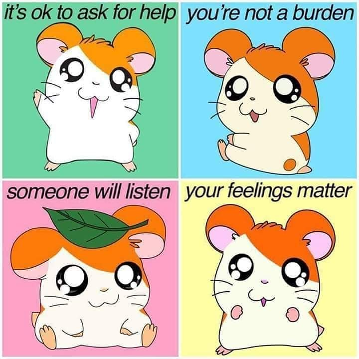
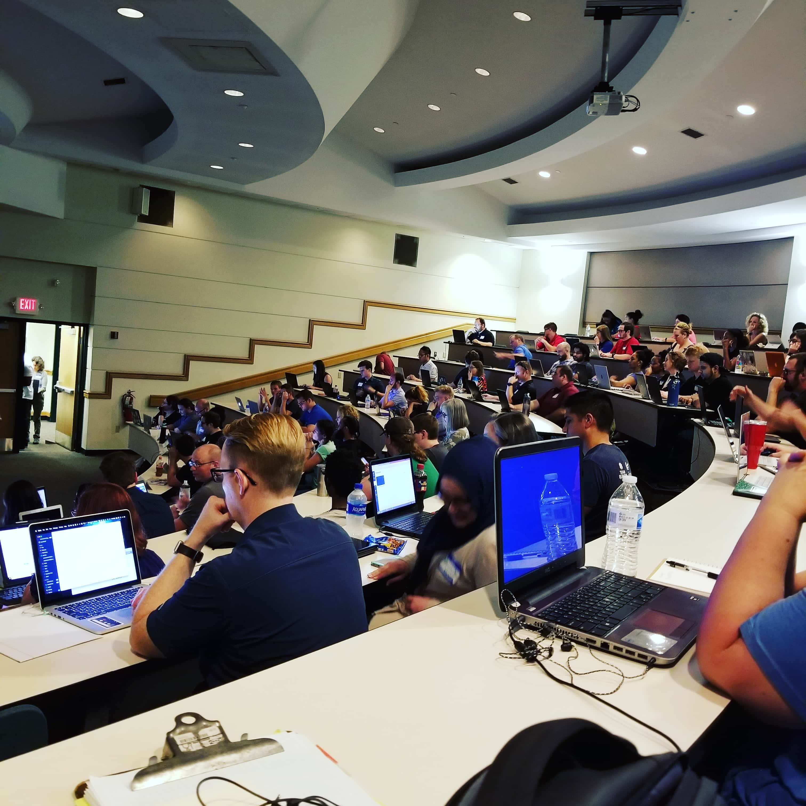

Motivation
From the very first time I opened an HTML file in the browser I was in love with web development. I instantly felt like a kid again. As I continue to learn more about my craft I only fall deeper and deeper in love with it. From the ever shifting technologies to the potential to create services that change lives - there's no shortage of reasons why I love doing what I do.
There's room for everyone on the web and I'm a strong believer in rule 303: "Those with the means to act have the obligation to do so". To me, in the realm of web development this means not arbitrarily excluding audiences from the things we build as web developers. Specifically, I'm talking about digital accessibility. Accessible content and features are not "nice-to-haves", they're the right and polite thing to do.
Relevant Experience
While I haven't made the transition to working as a UI engineer, I have taken some important steps toward making that dream come true.
- Graduated the LaunchCode bootcamp
- Worked remotely as a WordPress Developer
In addition to my experience listed above, I'm also working my way the Team Treehouse Techdegree program. I've found a wonderful community with Treehouse and am looking forward to continuing my education on the platform.